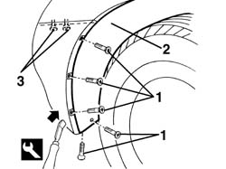
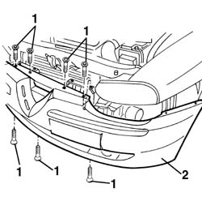
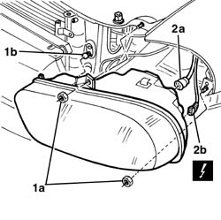

5540B83 Igniter IGNITION REACTOR for one gas discharge LIGHT CLUSTER left or right RR
- Path
- Procedures > 55 ELECTRICAL EQUIPMENT > 5540 EXTERIOR LIGHTING > 5540B headlamps > 5540B83 Igniter IGNITION REACTOR for one gas discharge LIGHT CLUSTER left or right RR
- Kind
- repair procedure (removal / refitting; the operation number is the code)
- Applies to
- all engines; all production periods
- Interactive page
- https://sloeber94.github.io/elrnDB-a156/en/#/3238458
Applies to: all engines; all production periods
 Removing
Removing
 Refitting
Refitting7055A43 central front grille - r r .
7055A41 RIGHT FRONT GRILLE - R.R. (right and left).
1. Undo the bolts fixing the ends of the front bumper.
2. Release the wheel arch liner from the front bumper, using the special tool, in the area where the bolts were removed.
 | Name | Country |
|---|---|---|
1 | Scraper blade | 1.823.014.000 |
3. Working from the bottom, undo the two bolts securing the bumper to the wing.

Applies to: all engines; all production periods
1. Undo the bumper's central bolts.
2. Move the bumper slightly and support it appropriately.

Applies to: all engines; all production periods
1. Undo the two nuts (1a) fixing the light cluster and release the bolt from the retainer (1b).
2. Move the light cluster and disconnect the electrical connections (2a) and (2b).
 | Name | Connector |
|---|---|---|
2a | Left headlamp |
| Name | Connector |
|---|---|---|
2b | Left headlamp |
| Name | Connector |
|---|---|---|
2a | Right headlamp |
| Name | Connector |
|---|---|---|
2b | Right headlamp |

Applies to: all engines; all production periods
Refitting
RemovingCheck that the light cluster is not damaged.
Connect the electrical connections and refit the light cluster.
Tighten the two nuts fixing the light cluster and attach the bolt to the retainer.
Reposition the side part of the bumper.
Tighten the bumper's central bolts.
Working from the bottom, tighten the two bolts securing the bumper to the wing.
Fit the wheel arch liner to the front bumper.
Tighten the bolts securing the ends of the front bumper.
7055A41 RIGHT FRONT GRILLE - R.R. (left and right)
7055A43 central front grille - r r
Zero the headlamp position using an Examiner or another tester.
Topics linked from this page (7)
- 5540B38 headlamp/light cluster light beam - position
- 7055A41 RIGHT FRONT GRILLE - R.R.
- 7055A43 central front grille - r r
- F10A Left headlamp ( FRONT )
- F10B Left headlamp ( CROSSMEMBER )
- F11A Right headlamp ( ABS )
- F11B Right headlamp ( ABS )